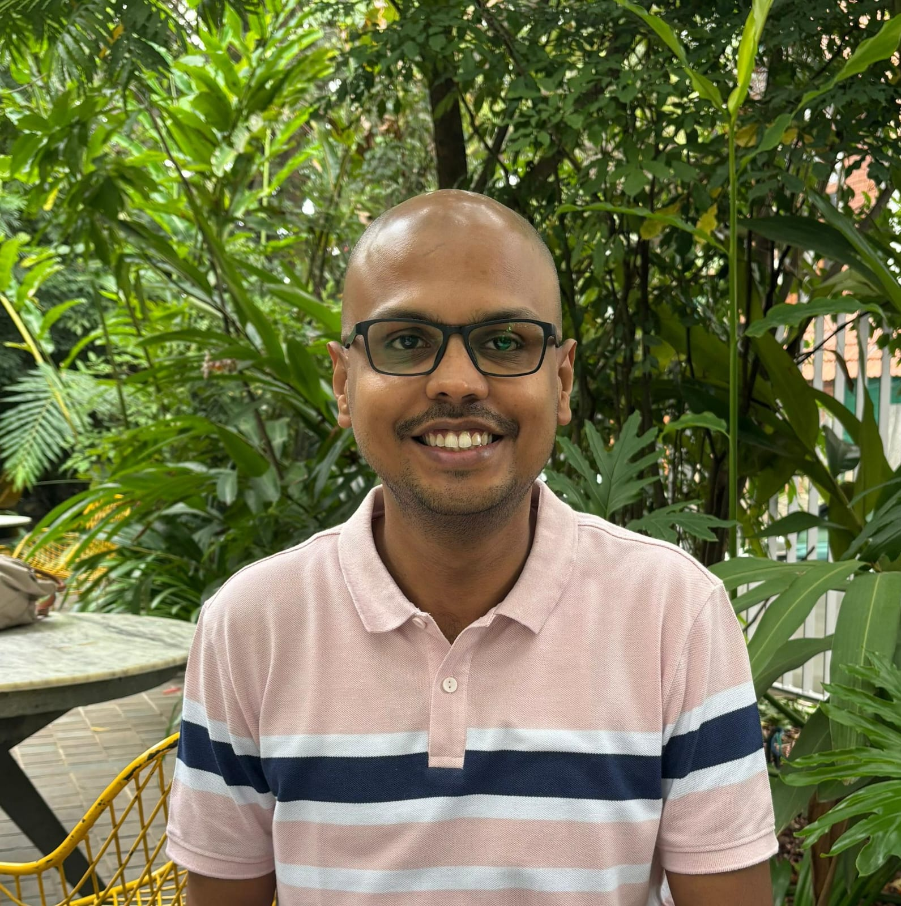
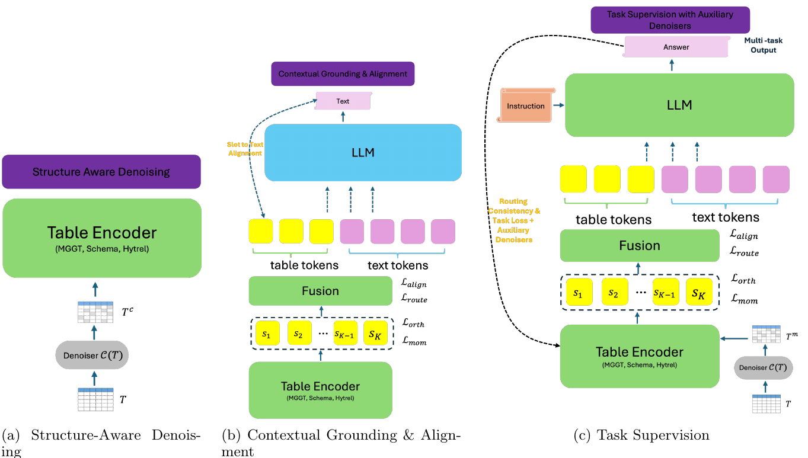
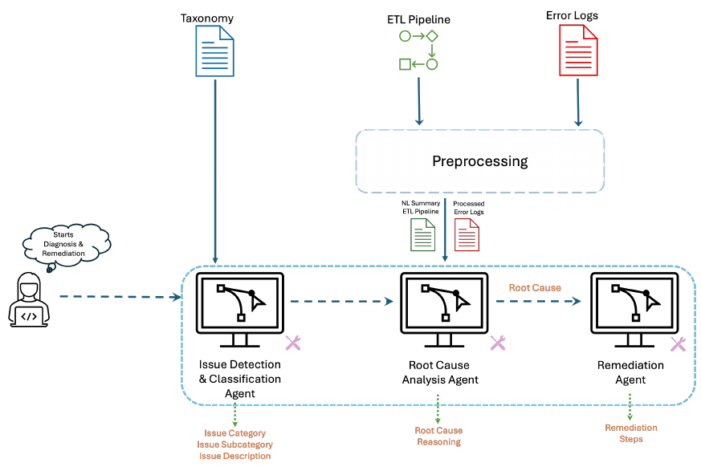

I work on post-training language models and agents with reinforcement learning, and on the simulated worlds those agents are evaluated and trained in. I was a Research Assistant at Microsoft Research India from 2013 to 2015 and have been at IBM Research since 2016. My work has appeared at AISTATS, SIGMOD, CVPR, UAI, AAAI and PLDI.
Email is the best way to reach me.
Generation dominates the cost of RL post-training, and a group-relative update gets a direct learning signal only from prompts whose rollouts disagree. Whatever the policy always solves, or never solves, is compute that buys no direct gradient. So sample efficiency is mostly a question of where learning signal can exist and how to keep training there, measured by problems the policy comes to solve that it couldn't before.
Each RL step decides the baseline, how much each prompt counts, how many rollouts to draw and whether to replay old data, and most recipes make those decisions by fixed rule, blind to the learner. Yet where a gradient exists depends on the learner's current state, and that state is latent. Training is really a partially observed control problem, in which every step both changes the learner and gives a noisy measurement of it. We track that state with a dynamic state-space model, using item response theory to relate it to verifier outcomes, so the decisions can follow the learner as it moves. The same uncertainty tells us when a problem the policy almost never solves is still worth an attempt, which is where new capability has to come from. The idea grows out of our earlier work using item response theory to evaluate models (ICML 2024 DMLR), where the model being measured held still. Here it changes with every step.
A training distribution that suits one checkpoint has stopped suiting the next by the time training gets there, so the environment has to move with the policy. What the worlds teach matters as much as how hard they are, and we see that sharply in search agents. An agent that has found three affected customers can't tell from those three whether a fourth exists, so stopping is a bet on what it hasn't seen. Agents trained with outcome rewards stop too early. Our reading is that they've learned the base rates of their training worlds, which is exactly what an outcome reward pays for. So we let the worlds carry the lesson. Their base rates vary from world to world, they keep the clues a real collection would leave, and they're rebuilt from each new checkpoint, so the only policy that keeps paying is one that reads its evidence. We place tasks at the frontier by whether the agent reached the evidence that settles them, since a correct answer can be a lucky guess.
The study above assumes worlds rich enough to move with the agent, and building them is a research problem of its own. Agents are usually tested in a world that waits for them. A real enterprise keeps moving. Its systems are coupled, processes run between the agent's actions, and anything the agent does, even a read, feeds into what happens next. So the future can't be precomputed, and each run has to be simulated live, as a POMDP whose hidden state evolves under the world's own dynamics as well as the agent's actions. With colleagues at IBM we generate such worlds with LLMs, to evaluate agents before deployment and later to train them with RL. The hard part is fidelity over a long, branching run, where an LLM stepping the world turn by turn drifts. Our view is that fidelity is owed only on the surface an agent touches, since two worlds that respond identically to everything an agent can do are, to that agent, the same world. A world starts from a seed, and its dynamics are learned from traces. The surface itself is still demanding. It has memory, because whatever the agent has read or written must stay consistent, and it widens as agents get stronger. Training raises the bar further, because a policy optimized with RL will find and exploit any error in the world that happens to pay off, the way policies learn to exploit bugs in a physics simulator.
A harness can move an agent's results as much as further training, yet it's usually designed once, by hand, and frozen while the model trains. Each component encodes its designer's guess about what the model needs, and a strategy built into a tool is one the model never has to learn. Those guesses also don't transfer, since the same component can help one model and hurt another. Our hypothesis is that scaffolding works best as a temporary learning intervention. Between rounds of RL, a meta- optimizer adds support where the model is falling short and withdraws it once the capability has been internalized, so different models can end up under the same minimal harness. Whatever is still there at the end marks what belongs outside the weights, which we expect to be what is exact, what must be auditable and whatever outgrows the context. Judgment under uncertainty should end up in the model.

Serializing a table into text teaches a model the serialization, down to the header strings and the row order. If you rename a column or shuffle the rows, accuracy falls apart, even though the table means exactly what it did before. We treat tables as a modality with their own encoder, fused end to end with an 8B decoder-only LLM, much as vision-language models treat images. The encoder is pretrained on 3 million tables by reconstructing ones we've deliberately corrupted, which teaches it to represent a table's structure and content under any surface form. The resulting model understands a noisy table, finds the information a question needs, and reasons only from that evidence. Under row shuffling and anonymized headers we lose under 2 points. The same architecture, fine-tuned directly on the same data, loses 6 to 22 points.

In an ETL pipeline, an error often surfaces well downstream of the stage that caused it. A zero divisor upstream becomes a NULL, passes untouched through a join, and only violates a NOT NULL constraint at the final write, which is where the logs point. We built a multi-agent system that reasons backwards from symptom to cause, as an experienced data engineer would. One agent classifies the failure against a practitioner-derived taxonomy, a second traces it upstream through the flow's structure and transformation logic, and a third proposes ranked remediations for the engineer to choose from. It runs in IBM watsonx.data integration on production DataStage pipelines.
Full list on Google Scholar and DBLP.
Post-training papers are usually organized by objective family. The choices that decide how a run goes sit one level down, in which samples get gradient weight and at what granularity, how stale replayed data may be, and how far a proxy reward can be trusted. Methods from the same family can disagree on any of them. rl-experiments isolates these choices in PyTorch sandboxes small enough to read the gradient directly, so failures that take days to surface at scale show up on a single GPU.
minilab runs the whole stack, from pretraining through RLVR, on a single laptop GPU, with every RL method sharing one rollout loop, so each stage of post-training can be watched at a scale small enough to reason about. The research built on it treats sparse-reward RL as an information problem before an optimization problem, since an update can only reinforce a trajectory that the policy visits and the verifier can tell apart from the failures around it.